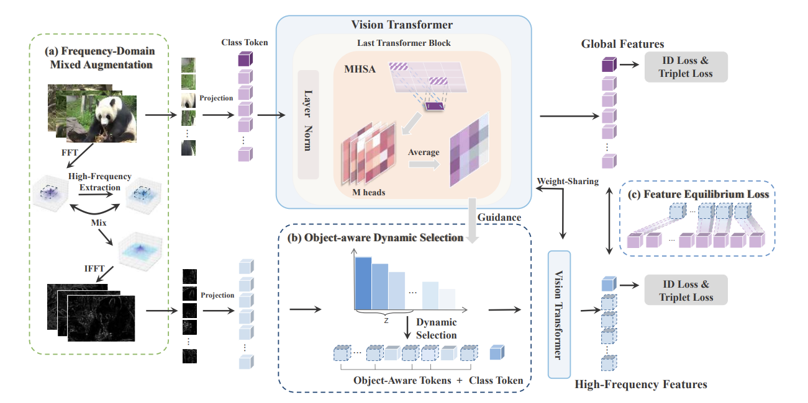
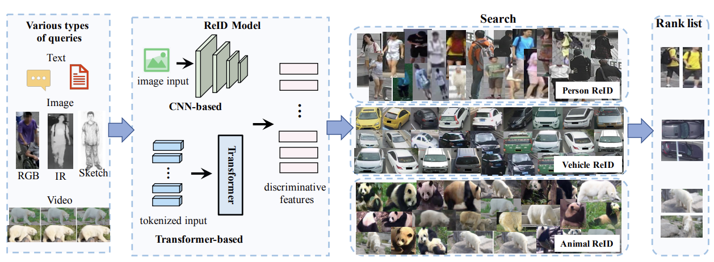

Chenyue Li
I'm currently a third-year undergraduate student (Sep. 2021 - Jun. 2025) at the School of Computer Science at Wuhan University, fortunately supervised by Prof. Mang Ye.
{kind=link}
Publications

Adaptive High-Frequency Transformer for Diverse Wildlife Re-Identification
Proposed a unified, multi-species general high-frequency Transformer architecture to enhance applicability across various species, breaking through the existing species-specific methods, and evaluated the model on diverse wildlife datasets, where it achieved superior performance over state-of-the-art ReID methods.

Transformer for Object Re-Identification: A Survey
We briefly review the development of the Re-ID field before the Transformer era, introduce Transformer in vision, and provide a detailed analysis of its numerous advantages.
Scholarships and Honors
-
2024 ICME Grand Challenge Multi-Modal Video Reasoning and Analyzing Competition
(International-level 2nd) 2024 - First Class Scholarship of Wuhan University (Award Rate: 5% school-wide) 2023
- Longfor Scholarship (Award Rate: 60/59774 = 0.1% school-wide) 2023
- Merit Student (Award Rate: 10% school-wide) 2023
- Outstanding Student (Award Rate: 30% school-wide) 2022
- Third Class Scholarship of Wuhan University (Award Rate: 30% school-wide) 2022

Gratefully attributed to the source code by Dr. Jon Barron.